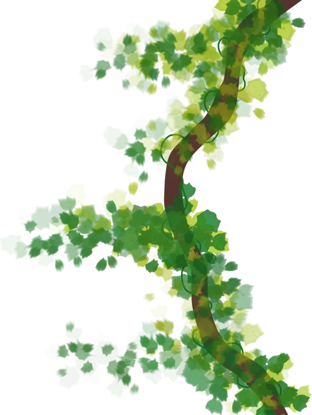

Baja ↓Toda leyenda comienza con algo que pocos saben escuchar
Se cuenta que en la Amazonía y la Orinoquía, Yaku era espíritu hecho de agua cristalina y brisa helada que les daba vida a los ríos y a los morichales.
Este tenía aspecto de aquel considerado Tótem de la zona.
Cada 7 años, un calor muy lejano llegaba desde el océano. Dicen que Yaku lo recibía bajo la sombra del bosque. Ahí se enfriaba y resguardaba.
Pero los humanos empezaron a quemar la selva y a tumbar los árboles.
Él se manifestó a través del viento. Nadie lo escuchó.
La siguiente vez que llegó el calor, ya no había sombra donde estar.
Se le metió a Yaku en el cuerpo y lo hizo hervir de dolor: su piel se volvió dura como una piedra y de su pecho brotó un corazón de lava.
El Titán de Fuego, al que llaman El Niño
Hoy, cada pisada del titán retumba en el territorio.
No lo hace por maldad. Está expulsando el calor que lo obligaron a guardar.
Expediente Yaku
El Niño no afecta a todos de la misma manera
Yaku tiene muchas versiones. Cada uno tiene versiones distintas de YAKU.
Cuando llegue el momento…
¿Tu territorio sabrá qué hacer?
Tu misión
Explora el mapa, investiga las señales y descubre cómo prepararte antes de que una emergencia ocurra.
Toca el Meta en el mapa
El primer aviso
En esta área, las lluvias intensas, las inundaciones, los vendavales y los movimientos en masa pueden poner en riesgo a las comunidades.
Yaku ha encontrado tres señales. ¿Podrás interpretarlas a tiempo?
Reconoce los riesgos y descubre cómo actuar a tiempo.
La aventura continúa en EnlAZAO.
Explora otros territorios. Descubre sus riesgos. Conecta las señales antes de que sea demasiado tarde.
Seguir la aventura